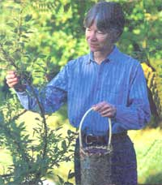
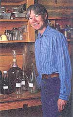
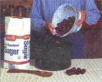
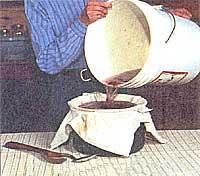
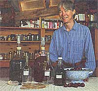
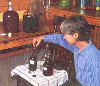

Issue # 165 - December/January 1998
The ten-minute guide to home winemaking.
Wild black cherries and chokecherries abound on our Cooks, Michigan homestead. It was one of our early quests to find something to do with them, as neither food nor money was in any particular abundance when we struck out on our own. At first we were content to simply admire them, but the nutritional content of admiration is very low.
You can make chokecherry jam and pies to be sure, but they require a great deal of sugar sweetening and eventually I had to give up on them for baking. I soon found that their ideal place was not on a plate but in a glass.
You'll find bookshelves full of guides to better wine and beer making. They are, for the most part, good, honest books with much to offer, but they do tend to make the process seem like 225 pages worth of daunting detail. In fact, wine virtually makes itself, and after experimenting with proportions of the very few ingredients involved, you'll have fine results in a very short period of time. Usually, you'll be more than pleased, and no one has to know about the little mistakes you'll relegate to the cooking-wine shelf or the compost pile. Consider my recipes as "pre wine guide" fodder.
Now, I know what you're thinking. "Usually? What happens when it's undrinkable? Do I have to taste each bottle?"
You do have to taste each batch, not every bottle (just think of the bliss of a life spent tasting each and every bottle!). And actually, disaster struck only once with some rhubarb wine. It was fine for cooking anyway so most of it was used. I've tried pin cherry wine, strawberry wine, and blackberry wine. But they didn't turn out to be as good so I usually stick to wild black cherry and chokecherry. Wild plum was an option once, but there just aren't enough growing around here to provide a steady supply.
Four quarts of any freshly picked fruit (minus the leaves and stems or course) is a good place to start. A lot of work for just a small glassful or two? Read on Macduff!
My recipe is simplicity itself:
1 quart (1 1/2 lb) chokecherries
10 cups water
3 cups (1 1/2 lbs) white sugar wine yeast
2 cups (1 Ib) sugar added later
This is the only good use for white sugar that I've found. I'd rather use maple syrup but my experiments with it haven't been successful. It's a little too strong in its own right. More trials would be worthwhile.
Simmer the berries and water about 30 minutes in a stainless steel or enameled kettle. Then let it cool to around 95°F and add your wine yeast. I use whatever general wine yeast is available locally. The packets I get are for five gallons of wine and contain ten 1/8 teaspoons of yeast. So for each gallon of wine I add two 1/8 teaspoons of yeast.
It takes about two pounds of cherries to make one gallon of wine. We have four quarts of cherries here, which is six pounds, divided by two equals three gallons of wine. So we will add six 1/8 teaspoons (or 3/4 of a teaspoon) of wine yeast when the time comes. You don't have to worry about being exact, a little more or less isn't going to hurt.
We need a good large container for the wine because when it starts working it foams up a bit. If I don't need my large stainless steel stock pot for anything else for a week, I leave the wine in there. An enameled canner or glazed crock also works. Cover with a loose fitting lid or cloth and let it sit for six days or so.
Then add the 2 cups of sugar for each quart of berries (in our case 8 cups of sugar or 4 pounds). Stir in well then strain the wine. I strain first through a colander and then through a clean cloth into another large container. Add the cherry pulp to the vinegar bucket, which already contains apple peelings and cores. Pour or siphon the wine into clean glass gallon jugs. Leave some space at the neck while the fermentation is still active.
You want to keep other yeasts out of your wine at this point (particularly the airborne vinegar variety) but you also have to let the gases escape from the working wine. To accomplish this, I now use regular water locks which you can get from a specialty wine/beer store. They're nice because they are reusable, but balloons will do in a pinch. Find some with a wide sturdy mouth. Just stretch the balloon over the top of the jug. Keep an eye on them though because if the balloons are too small they can be blown right off of the jug. Then set your jugs aside again to work.
By March the wine will be ready. I use a plastic tube to siphon it out of the jugs and into clean bottles with screw caps. Keep the tube up off the bottom sediment when siphoning. Congratulations! You are following in the footsteps of Ernest and Julio Gallo. Or in their very first footsteps, at least.
As I mentioned, gooseberries make a good wine too. Here is that recipe and a few of my other favorites.
1 quart (1 lb) gooseberries or 1 quart (1 1/3 lbs) wild plums with 9 cups water, 2 1/2 cups sugar, 1/4 tsp wine yeast and 1 3/4 cups sugar added later.
Pin Cherry:Use the same proportion as for wild black cherry. This is a good but drier wine. However, it takes a lot of picking to come up with a quart of the little things!
ApricotUsing a recipe of 1 packed quart pitted apricots to1 1/2 quarts water plus 2 cups sugar (1 cup added later) this made a too heavy but nice tasting wine. It was good mixed half and half with the following tame sour-cherry wine.
Tame Sour-CherryThe proportions used for this wine were 1 quart (1 1/2 lbs) pitted cherries to 2 quarts water plus 3 cups sugar (with 2 cups added later). Our product was good but quite sweet and very good when mixed with the above apricot wine.
Sue's book, Homesteading Adventures, A Guide for Doers and Dreamers (Many Tracks, 1997) is available through MOTHER'S Bookshelf by calling 1-800-888-9098 (ask for code # MEB253) for $16.98.
|
 PHOTOS: DAN WHITE 1. Mix fruit (cherry plums today), yeast and water. |
 2. After six days, strain and more sugar. |
 3. Seal the bottles with water locks... then wait the long wait. |
|
 4. Finally, siphon and bottle the wine. |
 |
 |